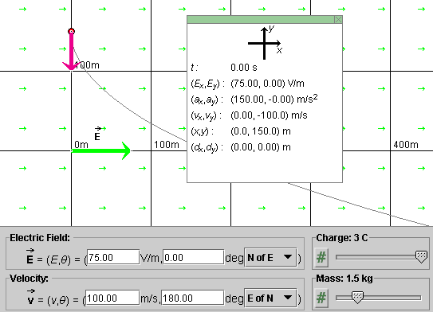
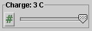
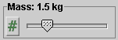
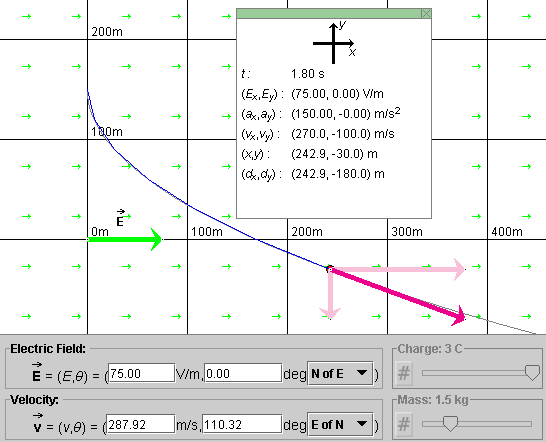
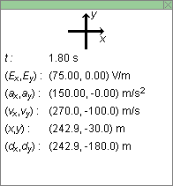

Instructions
This page is designed to get you started using the applet. The applet should be open. The step-by-step instructions on this page are to be done in the applet. You may need to toggle back and forth between instructions and applet if your screen space is limited.
 Setting the Particle's Initial Position and
Velocity
Setting the Particle's Initial Position and
Velocity
 Setting the Particle's Acceleration
Setting the Particle's Acceleration
Setting the
Particle's Initial Position and Velocity
Click the Reset button  .
.
Click on the particle and drag it to the initial position you want, e.g.,
the position shown in Figure 1 below at (x,y) = (0, 150) m. Displaying
the coordinate grid by clicking the Grid toggle button
 may be helpful. The grid is shown in Figure
1. The Data box shows the exact position of the particle. Display it by
clicking the Data button
may be helpful. The grid is shown in Figure
1. The Data box shows the exact position of the particle. Display it by
clicking the Data button  .
.

Figure 1
The magenta arrow represents the particle's velocity.
Figure 1 shows the initial velocity. Click the Velocity toggle button  a few times to alternately display
and hide the velocity vector.
a few times to alternately display
and hide the velocity vector.
In the velocity data entry fields, shown at the bottom of Figure 1, enter an initial velocity of magnitude of 100 and a direction angle θ equal to 180o relative to the positive y-axis. To enter such an angle, enter 180o E of N. Then press ENTER (RETURN) on the keyboard. The resulting velocity vector should be pointing straight down, as shown in Figure 1. The Data box shows the (x,y) components of the velocity vector.
You can also adjust the velocity by dragging the tip of the velocity vector. The velocity data fields are adjusted automatically.
Play the motion with the initial position and velocity settings suggested. You should be able to observe a trajectory similar to that shown in Figure 1. It should be exactly like that in Figure 1 if you set the other parameters as indicated in Figure 1.

The electric field simulated by the applet is uniform throughout the applet window. Therefore, the charged particle's acceleration has the same value everywhere.
The acceleration depends on three quantities: the electric
field  , the charge q of the
particle, and the mass m of the particle. Let's now go
through setting these three variables and, in so doing, setting
the particle's acceleration.
, the charge q of the
particle, and the mass m of the particle. Let's now go
through setting these three variables and, in so doing, setting
the particle's acceleration.
Enter a magnitude of 75 V/m and a direction angle of 0o N of E in the two data entry fields for the electric field, and press ENTER (RETURN) on the keyboard. That will give you the electric field vector shown in Figure 1.
Notice the small arrows pointing to the right throughout the applet window. They indicate the direction of the electric field everywhere. Their directions get adjusted as the electric field is varied, but their magnitudes don't. Try it.
You can adjust the electric field also by dragging the tip of the green field vector. The data entry fields for the electric field are adjusted automatically. The field's x and y components are displayed in the Data Box.
Set the charge q of the particle to 3.0 C by means of the Charge slider .
Set the mass m of the particle to 1.5 kg by means of the Mass slider .
With these settings, the acceleration has the value (ax, ay) = (150, 0) m/s2. The Data box displays this value.
With the settings made above, as displayed in Figure 1, click
Play  . Display the particle's
track by selecting the Trace toggle button
. Display the particle's
track by selecting the Trace toggle button  . You should be able to observe the particle moving
along a curved blue path like that shown in Figure 1.
. You should be able to observe the particle moving
along a curved blue path like that shown in Figure 1.
Click Rewind  and, without
changing any of the settings, step forward to t = 1.80 s by
clicking the Step button
and, without
changing any of the settings, step forward to t = 1.80 s by
clicking the Step button  six
times. The time steps are set at a fixed value of 0.30 s.
six
times. The time steps are set at a fixed value of 0.30 s.
If you also display the velocity components by clicking the
Components button  , you
should obtain a display as in Figure 2 below.
, you
should obtain a display as in Figure 2 below.

Figure 2

Figure 3
Figure 3 shows the Data box at instant t = 1.80 s. The following data relevant to a given instant are shown in the Data box: